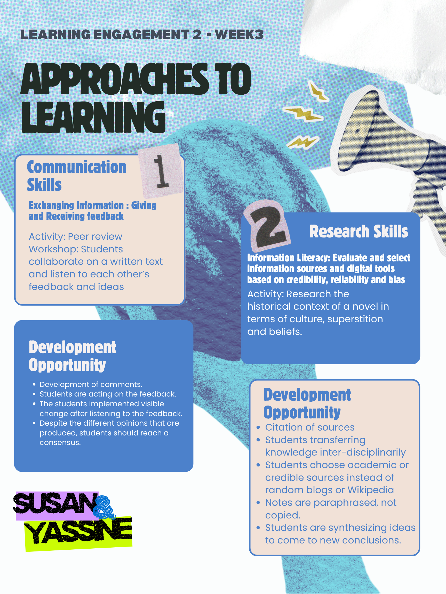
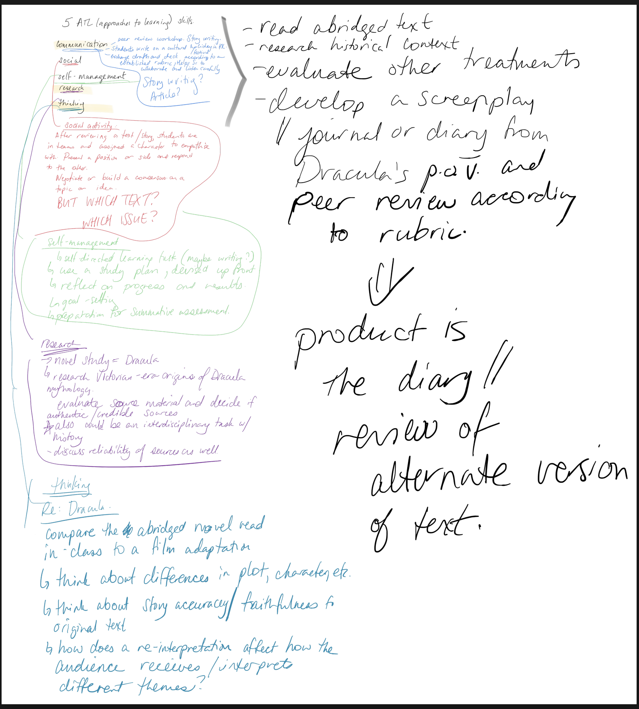

I've been teaching English to junior secondary ESL learners in Hong Kong for over twenty years. My students are 11 and 12 year olds with English levels that range from near-fluent to barely conversational - sometimes in the same class of 33. I teach them poetic devices through Taylor Swift and BTS, because pop culture opens doors that Victorian poetry never will.
This portfolio captures my journey through the IB Educator's Certificate, where I've been exploring how MYP frameworks - concept-based learning, inquiry-driven planning, criterion-based assessment - can transform what I already do in the classroom. It's pushed me to think harder about why I teach the way I teach, and how to do it better.
Module 1 explored the core IB philosophy, the Learner Profile, and Approaches to Learning (ATL). These foundational concepts underpin everything that follows in the MYP framework.
Concept-based learning organizes content and skills around broader concepts, generalizations, and principles. Four key pillars make it central to MYP:
Thinking with and applying knowledge rather than memorizing.
Factual and conceptual thinking interplay for deeper understanding.
Concepts transfer across contexts where facts cannot.
Connecting new knowledge to prior understanding to see patterns.
Modules 2 and 3 focused on planning and assessment within the MYP Language and Literature framework. I developed unit plans, designed learning tasks, and explored criterion-based assessment.
Each year, I teach a largely self-designed unit on poetic devices to Year 7 students (aged 11-12) with widely varying English proficiency. Taylor Swift and BTS are far more relevant to students than Victorian poetry will ever be. Key concept: relationships - between words, sounds, meanings, and audiences. Related concepts: style and meaning. Conceptual statement: "The relationships between poetic devices dictate the artistic style and shape the intended meaning of communication."

